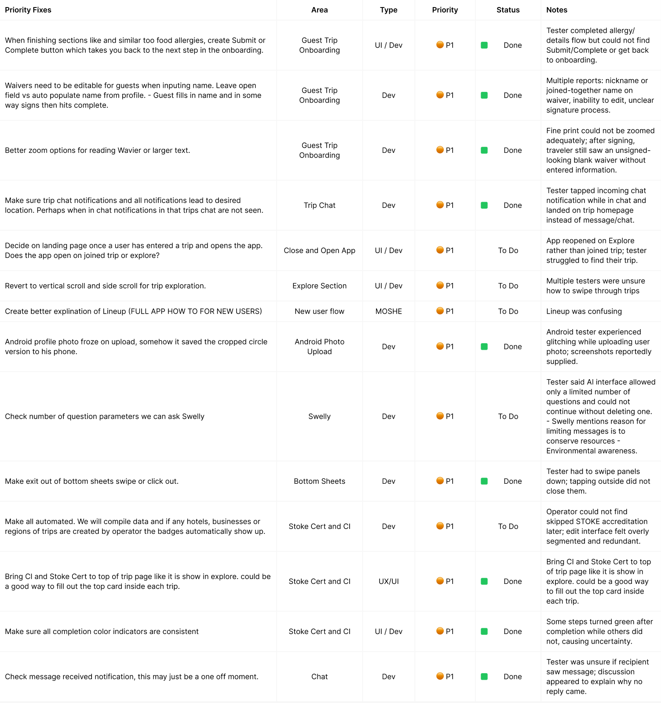

Priority Fixes: what was done
9 Nov 2026 · Swellyo app · from the Figma "Priority Fixes" list

Done (9)
DONE 1. Complete button after Personal Info (allergies)
The button now says Complete and you can always tap it. If something is missing, it closes the keyboard and shows in red what is still needed. When all is filled, it saves and goes to the next onboarding step.
Why testers were stuck: the old button was grey and did nothing until every question had an answer, and the hint was tiny and grey.
DONE 2. Waiver: guest types their name and signs
The name is no longer filled in from the profile. The guest types their full legal name in an open field ("Sign with your full legal name"), then taps Sign and complete. The text says that typing your name signs the waiver. This works in onboarding and in the Plan tab.
This fixes nicknames and joined-up names on waivers that guests could not change.
DONE 3. Waiver zoom and signed state
You can now pinch to zoom the waiver up to 4×, inline and in full screen (it was locked at 1×). Text-only waivers use bigger text. After signing, the screen shows "Signed by [name] on [date]" instead of a blank-looking waiver.
DONE 4. Chat notifications open the chat
Tapping a trip chat notification now waits until the app knows you can see the chat, then opens the Chat tab. Before, it sometimes decided too early and fell back to the trip homepage. The app already hides banners for the chat you are looking at.
DONE 8. Android profile photo freeze
The photo is now made smaller (1024px) while it is cropped, so the phone no longer has to hold a huge image. If cropping fails, the app shows a message and closes the cropper instead of freezing.
The cropped copy in the gallery does not come from our code. It is most likely the phone's own photo app.
DONE 10. Close bottom sheets by tapping outside
The trip-creation sheets and the profile destinations sheet now close when you tap the dark area outside them. Swipe down still works. Most other sheets already did this.
DONE 12. CI and STOKE logos at the top of the trip page
The same CI and STOKE logos from the Explore card now show at the top of the trip's main card, above the dates. Both screens use one shared component, so they always match.
DONE 13. Same "done" color everywhere
In operator setup, finished steps now all use the same cyan color as the checklist. Before, Stripe, Waiver and Insurance turned green while Currency, Policy and Agreement did not.
Please confirm this was the screen the tester meant.
DONE 14. "Did they get my message?" in trip chat
Your own messages in trip chats now show a grey tick once they are sent. Before, group chats showed no tick at all. Group chats still do not show "read", because many people read them.
Partly done (2)
PART 9. Swelly message limit
The limit is real: 40 messages per chat and 100 per day. Now, when a chat is full, Swelly offers a Start new chat button. To raise the limit, set SWELLY_MAX_MESSAGES_PER_CHAT and SWELLY_MAX_MESSAGES_PER_DAY in the Supabase function secrets. No code change is needed.
The "save resources / environment" reason is not in our code or prompts. Swelly made it up.
PART 11. STOKE / CI easy to find later
The operator's trip edit screen now has its own Certifications row, showing "STOKE · CI" or "Add". Making badges fully automatic, from data we collect about hotels and regions, needs that data first.
Not done: needs a decision or another owner (3)
TO DO 5. Which page opens first
This is a product decision: should the app open on Explore, or on the trip you joined? Once decided, it is a small change.
TO DO 6. Vertical + side scroll on Explore
The Explore deck was made vertical-only on purpose earlier. Please confirm we want to change that, and how it should look.
TO DO 7. Lineup explanation
Assigned to Moshe.